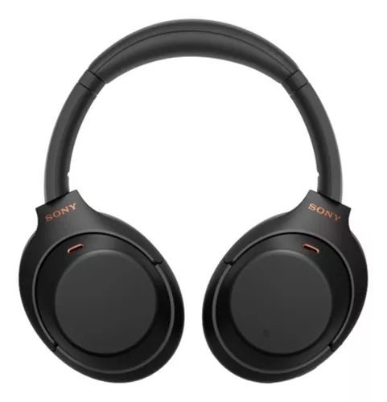
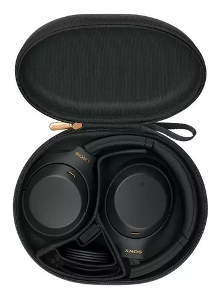
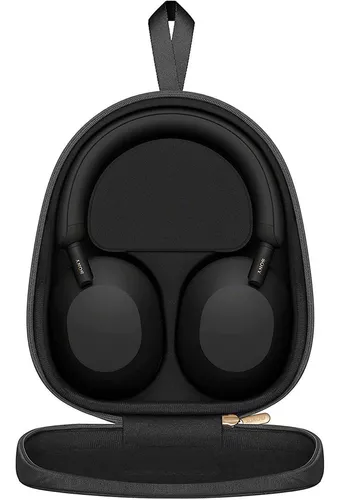
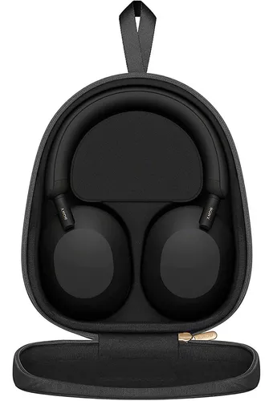
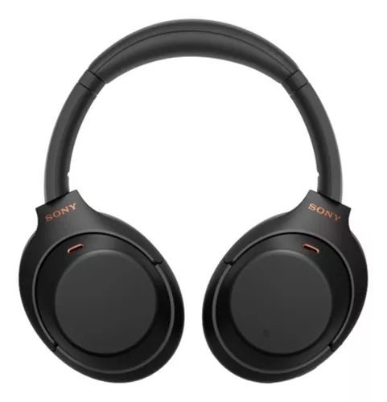
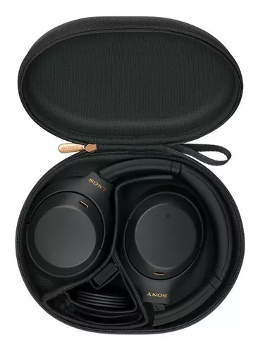
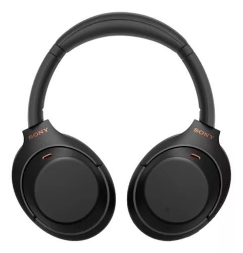
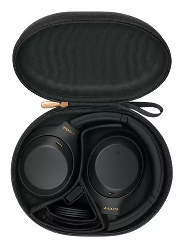

Audífonos Sony Bluetooth Noise Cancelling | Wh-1000xm5 Color Negro
Los audífonos WH-1000XM5 brindan una experiencia auditiva sin distracciones y claridad en las llamadas. Dos procesadores gestionan los múltiples micrófonos para proporcionar un sistema de cancelación de ruido avanzado, mientras que el optimizador de cancelación de ruido se ajusta automáticamente según el entorno y el uso de los audífonos. La unidad de diafragma de 30 mm está diseñada para entregar una calidad de sonido superior.
$1.199.99
Audífonos Lenovo GM2 Pro
Audífonos Lenovo GM2 pro Inalambrico Gaming Deportivos
Cuenta con tecnología True Wireless.
Alcance inalámbrico de 10 m.
La batería dura 5 h.
Modo manos libres incluido.
Con cancelación de ruido.
Con estuche de carga.
Con micrófono incorporado.
Resistentes al agua y al polvo.
Sonido superior y sin límites.
Cómodos y prácticos.
La duración de la batería depende del uso que se le dé al producto.
Tamaño del altavoz: 13mm.
Las imágenes pueden ser ilustrativas
$40.99


Audífonos Sony Noise Cancelling Bluetooth Hi-res Wh-1000xm4 Color Negro
Sony, sin lugar a dudas es una de las marcas más reconocidas en el mundo por la fabricación de dispositivos de audio. Su gama de audífonos se caracteriza por brindar siempre una gran experencia de uso en sus usuarios y ofrecer una alta calidad en todos los componentes de sus reproductores. Esto hace que puedas notar un gran sonido desde su primer uso.
$899.99
Audifonos Inalámbricos Bluetooth Lenovo Livepods Lp40 Pro Color Negro
En la calle, en el colectivo o en la oficina, ten siempre a mano tus audífonos Lenovo y ¡escápate de la rutina por un rato! Vas a poder disfrutar de la música que más te gusta y de tus podcasts favoritos cuando quieras y donde quieras.
 



 


